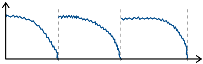

Time Series Forecasting
In time series forecasting, the goal is to predict the future time course of a variable (i.e. its values for \(t' > t\)) from its past values (and possibly some additional information). This is, for example, used in Predictive Maintenance, where the remaining life span or degradation of important process components is forecast based on their past usage and possibly some future process conditions:

Predictive Maintenance Example Paper:
Bogojeski, M., et al. “Forecasting industrial aging processes with machine learning methods.” Computers and Chemical Engineering 144 (2021): 107123. (arXiv:2002.01768)
Input and Target Variables
Basically, you can think of time series forecasting as a supervised learning problem with more complicated inputs & outputs:

Depending on the task (i.e., what you want to forecast), you either have a univariate forecasting problem (if you only need to predict the development of a single variable) or a multivariate problem (i.e., with multiple target variables). Additionally, it is important to note for how many time steps into the future the variables need to be forecast: in the easiest case, only the next time step needs to be predicted, but it might also be necessary to predict a fixed window of \(k\) time steps into the future, and sometimes the prediction horizons might even be of varying lengths.
In any case, one should always try to make use of as much (relevant) information as possible when making forecasts. In principle, all values from the past can be used as input features, especially those from the target variable(s) (→ see also auto-regressive models, e.g. ARIMA). What is often overlooked, however, is all the additional information about the future that can be used as inputs as well, provided that these values are independent of the targets, i.e., exogenous variables outside of the system.
For example, let’s say you own a small cafe and want to predict how much ice cream you are likely to sell tomorrow. Certainly, the amount of ice cream you’ve sold yesterday or at the same day last week will be useful input features, but additionally, for example, the weather forecast for tomorrow or whether or not there is a holiday or some special event happening would be useful predictive information that should not be ignored and that can be used since these are independent variables.
Know your data: Beware of hidden feedback loops!
- What are input features, what are targets?
-

In this example, the pressure in some pipes indicates how much residual materials have build up on the walls of the pipes (→ fouling) and the task is to predict when these pipes need to be cleaned again, i.e., when the next maintenance is due.
While future process conditions, like the planned amount of product that should be produced in the next weeks, can be used as an input variable at \(t' > t\), if you want to forecast the target for more than one time step, only the past values of temperature can be used as input features, since, at least in the historic data, the value of the temperature at \(t+2\) is dependent on the target variable (pressure) at \(t+1\).
Stateless vs. Stateful Models
When dealing with time series data, one should always think carefully about how complex the dependencies between the past and future process values in the respective forecasting task are.
For example, when trying to predict spontaneous events, like a sudden increase in the emissions produced in the process, then the relevant time window into the past when the process conditions might have an influence on this target variable would be very short, i.e., only the process values from time \(t\) need to be included in the input feature vector to predict the anomalous event at time \(t+1\).
For other prediction tasks, what happened over a longer (but uniquely determined) interval might be relevant, but can be summarized with simple features. For example, in a production process, one might want to predict the quality of the final product that is produced within a fixed time interval. In this case, the process conditions during the time interval where the respective product is produced will be important for the prediction, but the process conditions during the time where the previous product was produced are most likely not relevant. Additionally, it would be enough to compute only some summary statistics (like mean/max/min values of the process conditions during the time interval of interest) and use these as input features to capture all the relevant information.
A third case would be prediction tasks for which it is necessary to consider very long time windows, often of varying lengths, with some complex long-ranging dependencies between the process conditions at different time points. For example, in some predictive maintenance tasks, the decay of the critical process component might not happen in some linear fashion (unlike, for example, a light bulb, which might have some fixed life expectancy and one only needs to count the number of hours it was turn on up to now to estimate when it needs to be replaced), but there might be a more complex dependency, for example, the component might decay faster if it is already in a poor state, therefore, if some unfortunate combination of process conditions lead to a strain on the component early on, it might have to be replaced a lot sooner then under otherwise identical conditions without this initial mishap.
Depending on how complex the dependencies between process values over time are, it will be more or less complicated to construct feature vectors that capture all the relevant information to make the prediction. In general, one should always try to come up with features that contain all the relevant information about the past, i.e., that fulfill the Markov assumption that given this information the future is otherwise independent of the history of the process. If this is possible, you can use a stateless model (e.g., any of the supervised learning models we’ve discussed so far except RNNs) for the prediction, i.e., treat all your data points as independent regardless of where in time they occurred. If it is not possible to construct such an informative feature vector that captures all the relevant information about the past, e.g., because of complex long-ranging dependencies, then you have to use a stateful model (e.g., a form of Recurrent Neural Network (RNN)), which internally constructs a full memory of the history of the process (i.e., it keeps track of the current state of the process).
You need a feature vector for every time point you want to make a prediction about. Think about what it is you’re trying to predict and what values could influence this target variable, i.e., what inputs are needed such that you have all the required information to make the prediction. Especially when using stateless models, each feature vector needs to capture all the relevant information about the past.
- Possible Features
-
-
known information about future (e.g. weather forecast, planned process conditions)
-
auto-regressive: lagged (target) variable (i.e. values at \(t' \leq t\))
! don’t use the predicted target value for this – errors accumulate! -
account for cyclical (e.g. seasonal) trends (→ check auto-correlation or spectral analysis)


→ include categorical variablesmonthandday_of_week -
hours since last maintenance event or integral of input variable (maybe take log)

-
→ For more ideas: tsfresh library, time series analysis blog posts
Whether to use a stateless or stateful model is also an important consideration when dealing with other kinds of sequential data such as text. Analogous to the three scenarios described above, we can also find similar cases for natural language processing (NLP) problems that either benefit from the use of stateful models or where a simple stateless model is enough:
-
spontaneous event: trigger word detection for smart speakers: a simple classification task for which only the last 1-2 spoken words, i.e., the audio signal from a time window of a few seconds, are relevant
-
fixed interval & summary features: text classification, e.g., determining the category of a newspaper article (e.g., ‘sports’ or ‘politics’): while here a longer span of text needs to be considered to make the prediction, a simple TF-IDF vector is usually sufficient to represent the contents of the whole document, since such categories can easily be identified by simply checking whether the terms “soccer” or “politician” occur more often in the current article
-
complex long-ranging dependencies: for some tasks like sentiment analysis or machine translation, it doesn’t just matter which words occurred in a text, but also in which order and what their larger surrounding context was
→ While for 1. and 2. a stateless model will do just fine, for 3. the best performance will be achieved with a stateful model that can keep track of the more complex dependencies.
- Output prediction with stateless models (e.g. linear regression, FFNN)
-
univariate, single-step prediction:
\[[\underbrace{\quad y_1 \quad}_{t' \,\leq\, t} | \underbrace{\, x_1 \, | \, x_2 \, }_{t+1} ] \; \to \; [\underbrace{y_1}_{t+1}]\] -
multivariate, single-step prediction:
\[[\underbrace{\quad y_1 \quad | \quad y_2 \quad}_{t' \,\leq\, t} | \underbrace{\, x_1 \, | \, x_2 \, }_{t+1} ] \; \to \; [\underbrace{\, y_1 \, | \, y_2 \, }_{t+1}]\] -
multivariate, multi-step prediction:
\[[\underbrace{\quad y_1 \quad | \quad y_2 \quad}_{t' \,\leq\, t} | \underbrace{\quad\quad x_1 \quad\quad | \quad\quad x_2 \quad\quad }_{t+1\, ...\, t+k} ] \; \to \; [\underbrace{\quad\quad y_1 \quad\quad | \quad\quad y_2 \quad\quad }_{t+1\, ...\, t+k}]\]
- Output prediction with stateful models (e.g. RNN: LSTM, Echo State Network)
-
multivariate, multi-step prediction:
| Train, validation, and test data splits should always be in chronological order, i.e., the model should be trained on the oldest time points and evaluated on more recent samples to get a realistic performance estimate, especially in cases where the data might have changed over time, e.g., due to smaller changes in the underlying process. |